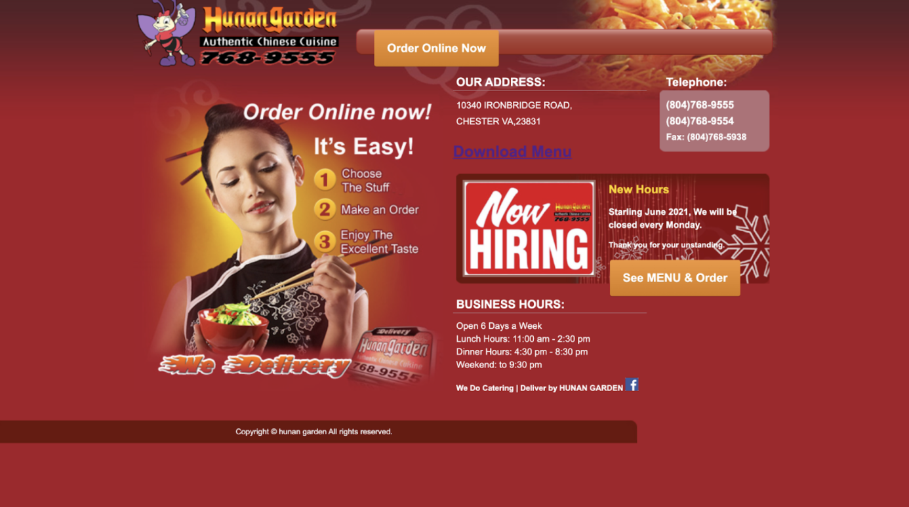
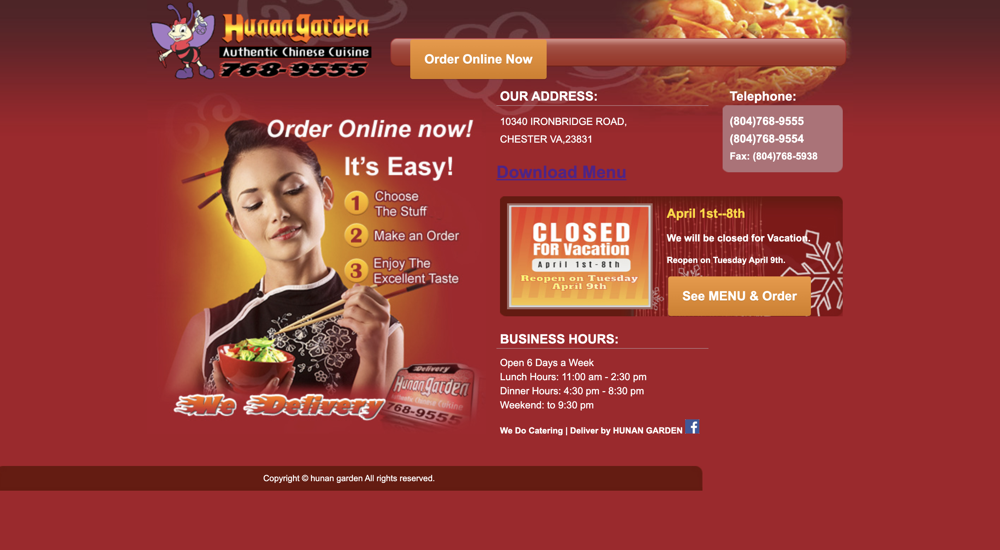
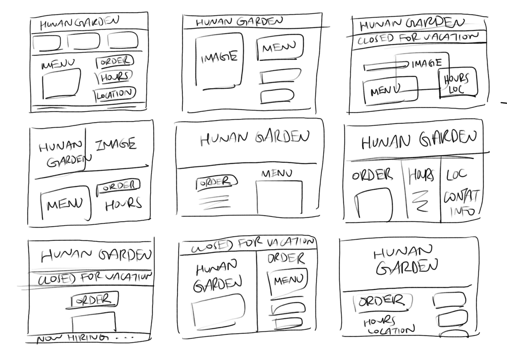
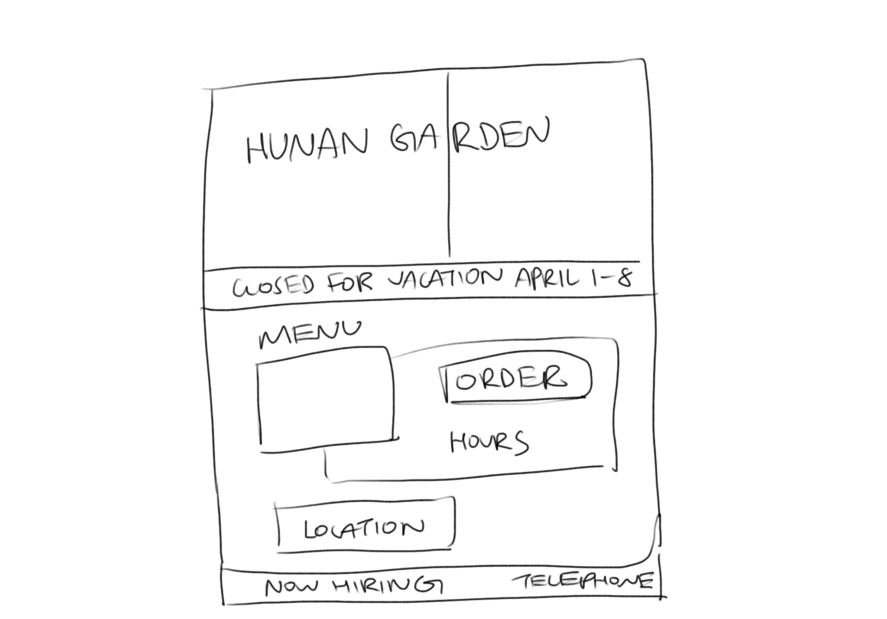

Background
Oftentimes, websites for local businesses are not created by designers.
Out of curiosity, I decided to check out the website for my family's own
business, a small Chinese restaurant called Hunan Garden. (It might come
as a surprise, but I've never actually seen this website before this
because I've never had a need to 🙃)
I decided to redesign Hunan Garden's website, not just because it could
use some touch-ups with regards to usability and accessibility, but also because it's exciting to potentially have the chance to
give back in some way to my parents and this restaurant that raised me.
Here's what the Hunan Garden website looked like a few weeks ago:
Here's what it currently looks like (see for yourself here!):
The main elements are images, buttons for ordering, business hours, telephone numbers, and the address. There also seems to be a place for announcements, such as "Now Hiring" or "Closed for Vacation."
Usability and Accessibility Concerns
Some initial observations:
- There are two buttons to order, which may be confusing for new users
- The contents of the page seem a bit scattered and could be organized in a more logical order
- The text may be too small in some places, which may make some of the important information not as noticeable
- The website is not optimized for mobile screens
Using WAVE, I also found that the website was missing alt text and has a link to a PDF document, which often has accessibility issues. Most of the accessibility problems might not be immediately visible, but the website should still be redesigned for a wide range of users, including those that may use a screen reader or rely on alt text.
Sketches
With the above concerns in mind, I did nine quick one-minute sketches before settling on a final sketch.

Since I thought the original webpage was a little disorganized, I wanted to create a clear visual hierarchy to make the information easier to digest. The final sketch intends to draw the user's eye to the menu and down to the order button, hours, location, and so on. I also like the look of having a bar at the top for important announcements since it jumps out when a user arrives at the page. In addition, I decided to get rid of repeating elements to make the page less confusing, such as having only one button for ordering and one phone number.